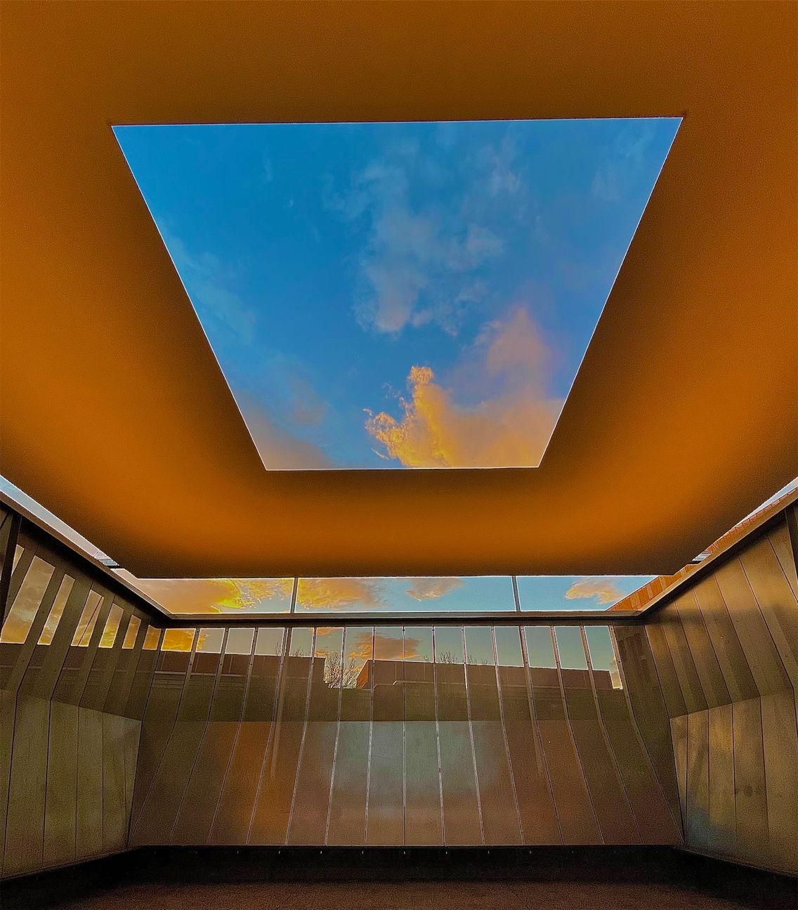

Meeting
Skyspace Site Specific Installation at MoMa PS1
the medium
that turrel works with is light and experience, which
is
an insane concept
alone.
im the type of person who really romanticizes experience and the way just being somewhere makes me feel so his works reasonates with me greatly
